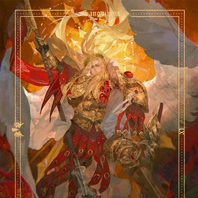

Angels Imperialis Blood Angels
Last Updated: June 2026
The Sanguinius Bot serves the Sons of Baal — managing character cards, operations, the Chapter Orbat, awards, relics, and much more. Below is the full list of features and commands available to all brothers.
Create and manage your warrior's profile in the Chapter archives.
/create_character_cardEstablish your warrior's card. Set your Roblox username, character name, timezone, and optional lore — quote, history, and character image.
/view_character_cardView cards for yourself or another warrior. Displays all stats, operations, qualifications, awards, oaths, penances, inactivity notices, held relics, and current status.
/edit_character_cardUpdate your Roblox username, character name, timezone, quote, or history via a form. Supports up to ~1,000 words of lore.
/edit_character_imageUpdate the image on your character card by providing a direct image URL.
/archive_character_cardArchive your current card and start fresh. All data is preserved and can be restored at any time.
/view_archived_cardsView your 3 most recent archived character cards.
/unarchive_character_cardRestore a previously archived card back to active status. Requires no currently active card.
/delete_character_cardPermanently remove your character card from the archives. Cannot be undone — consider archiving instead.
Submit and track participation in Chapter operations against the enemies of the Imperium.
/log_operationSubmit an operation for approval. Include the operation name, difficulty, enemy type (Chaos or Orks), mission type (FPD, OPD, Community Event), a required screenshot, and optional notes.
/edit_operationModify a previously approved operation. Update name, difficulty, enemy, mission type, notes, or screenshot. All edits are logged.
/character_card_leaderboardView the top 10 warriors by Total Points, Total Missions, FPD, OPD, Oaths Fulfilled, Chaos Operations, or Ork Operations.
All FPD and Community Event operations award 1 point regardless of difficulty.
OPD (Operational Permanent Death) operations award 0 points — they track attendance only.
Points are saved immediately on approval and automatically synced to the Chapter Orbat — no manual update required.
Recognise warriors who have distinguished themselves in service to the Chapter.
/award_memberAuthorizedBestow an award on a warrior. The bot assigns the corresponding Discord role, logs the award to the Awards sheet, and stores it on the warrior's combat record for future reference.
🩸 Awards are permanently tracked on character cards and in the Orbat spreadsheet. They are preserved even if a character is archived and can be restored if a death is voided.
/manage_qualifications add/removeAuthorizedAward or remove qualifications from a warrior's card. Requires the appropriate authorization role.
11 Available Courses:
/commend_warriorAward a commendation to a fellow warrior for exceptional service. A 12-hour cooldown applies per recipient — you can commend other warriors freely, just not the same person twice within 12 hours. You cannot commend yourself.
/oath_of_sanguiniusSwear a personal Oath of Sanguinius before the Chapter. Displayed on your card with a countdown until fulfilled or cancelled. One active oath at a time.
/oath_fulfilledAuthorizedMark a warrior's active oath as fulfilled. Increments their fulfillment counter and permanently records the achievement.
/assign_penanceAuthorizedAssign penance to a warrior with flexible duration (days and/or hours). While under penance, the warrior's card displays in black and is logged to the Penances sheet.
/remove_penanceAuthorizedLift an active penance early. A reason is required and logged. The Penances sheet updates automatically.
Request, manage, and end inactivity notices with Chapter approval. Active notices show on your card with a live countdown.
/request_inactivitySubmit an inactivity notice for approval. Provide your Lore Name, Username, Reason, and duration in days. Once approved, you receive the inactivity role and your card shows a return-date countdown.
/manage_inactivity action: UpdateRequest an edit to your active notice. Your current notice stays active while the update is pending approval.
/manage_inactivity action: End EarlyRequest to end your inactivity before it expires. Requires approval.
Track the Chapter's sacred relics and their holders. Relics are automatically set to IN STORAGE when created, IN USE when assigned, and LOST if a holder dies in battle.
/view_reliquaryView the full reliquary — relics in storage and those held by warriors, with names, descriptions, and holder mentions.
/manage_reliquary action: Add RelicAuthorizedAdd a new relic with a name, type (Sacred, Armor, Firearm, Melee, Accessory, Tool), and optional description. Automatically logged as IN STORAGE.
/manage_reliquary action: Edit RelicAuthorizedEdit an existing relic's name, type, or description.
/manage_reliquary action: Remove RelicAuthorizedPermanently remove a relic. Works on both stored and assigned relics.
/manage_reliquary action: Assign RelicAuthorizedAssign a relic to a warrior. Status automatically updates to IN USE with the holder's lore name and username.
/manage_reliquary action: Unassign RelicAuthorizedReturn a relic to storage. Status automatically reverts to IN STORAGE.
The full KIA and void flow maintains complete integrity across all systems.
The bot maintains the Chapter's Google Sheets Orbat in real time, writing to pre-defined rows based on each member's Discord roles.
/sanguinius_wisdomReceive wisdom from the Great Angel. 50 unique quotes drawn from ten millennia of war and sacrifice.
/for_sanguiniusDeclare your loyalty publicly before your battle-brothers. 4 response variations.
/sanguinius_blessingReceive Sanguinius's personal blessing before battle. 50 unique blessings.
/sanguinius_addressHear Sanguinius address the Chapter directly. 50 unique addresses on sacrifice, the Black Rage, and the burden of the Blood Angels.
/blood_angels_prayerSanguinius leads the Chapter in a prayer before battle with call-and-response. 50 unique prayers.
/blood_angels_quoteReceive a quote from Blood Angels lore and tradition. 50 unique quotes.
/dice max:[number]Roll a dice up to your chosen maximum. Usable by anyone — enter any number from 2 to 1,000,000.
All important actions are automatically logged to dedicated channels:
A full standalone RPG economy system themed around Blood Angels lore. Fight Orks and Black Legion, earn Requisition Points, collect gear, run dungeons with your squad, and gamble your earnings. Completely separate from your character card — anyone can play.
Your Standing tier is determined by your level. Higher tiers unlock dungeons, increase RP and XP multipliers, and raise your gambling cap.
/rpg_profileView your full RPG profile — level, Battle Rating, wallet, bank, Honour Tokens, equipped gear, and stats. View other warriors' profiles by mentioning them.
/rpg_huntHunt Orks or Black Legion forces. A random enemy appropriate to your level is selected — the higher your level the tougher the enemies you face. Win for RP, XP, materials, and gear drops. 30-minute cooldown.
/rpg_patrolA safer alternative to hunting. Guaranteed small RP and XP with no combat risk. 15-minute cooldown.
/rpg_dailyClaim your daily Requisition Points reward. Builds a streak — every 3 days awards bonus materials, every 7 days awards 1 Honour Token.
/rpg_trainSpend RP to train in the cages and gain XP. Cost scales with your level. 1-hour cooldown.
/rpg_cooldownsCheck the remaining cooldown on all your RPG commands at a glance.
/rpg_bank deposit/withdraw/balanceYour bank keeps RP completely safe from robbery. Only your wallet RP can be stolen or gambled. Deposit to protect your earnings.
/rpg_robAttempt to steal up to 25% of another warrior's wallet RP. Success depends on your BR vs theirs. Fail and you lose 10% of your own wallet. 1-hour cooldown. Cannot target warriors with less than 500 RP in their wallet.
/rpg_duelChallenge a warrior to a PvP wager duel. Set a bet — winner takes the pot. BR plus a random roll decides the outcome. Losing costs you real RP. 30-minute cooldown.
Dungeons are the highest-reward activity. Start a run solo or invite up to 4 others to your party using the Join button. Party leader starts the fight. Requires minimum Battle Rating and Chapter Standing. 12-hour cooldown.
Gear comes in five rarities and determines your Battle Rating alongside your level. Buy from the shop, find from hunt drops, or craft from materials. Honour Token gear is the most powerful and can only be bought with HT earned from dungeons.
/rpg_shopBrowse the Armoury by category: Weapons, Armour, Consumables, or the Honour Vault. Items locked above your Chapter Standing tier are hidden.
/rpg_buy [item id]Purchase an item. Use the item ID shown in the shop. RP items deduct from wallet; HT items deduct Honour Tokens.
/rpg_equip [item id]Equip a weapon or armour from your inventory. Equipped gear directly raises your Battle Rating.
/rpg_inventoryView all weapons, armour, materials, and consumables you own.
Materials drop passively from hunts — Ceramite and Promethium are common, Adamantium is uncommon, Warp Residue is rare, and Void Crystals only drop at Tier 4+. Combine them to craft powerful gear.
/rpg_craft [item id]Craft an item if you have the required materials. Crafted items go straight into your inventory.
/rpg_recipesView all craftable items with their material costs. Locked recipes show what Chapter Standing tier is required.
All gambling uses your wallet RP only — banked RP is always safe. Your Chapter Standing determines your maximum bet. All games are fair random outcomes.
/rpg_blackjack [bet]Standard blackjack against the house. Stand on 17+. Win doubles your bet, bust or lose costs it. Ties push.
/rpg_coinflip [bet] [heads/tails]50/50 — call heads or tails. Win doubles your bet.
/rpg_slots [bet]Themed slot machine with 7 Blood Angels symbols. Three matching symbols pays out from ×3 up to ×12 for a triple Honour Medal jackpot. Two matching pays ×1.5.
/rpg_roulette [bet] [choice]Bet on red/black/green, odd/even, a dozen (1-12, 13-24, 25-36), or a specific number 0-36. Colour and odd/even pay ×2, dozens pay ×3, single numbers pay ×36.
/rpg_leaderboardView the top 10 warriors in 6 categories: Battle Rating, Level, Total RP (wallet + bank), Dungeon Runs, Total Kills, and Duel Wins.
Bot Created By
GojiraBandit
Engineered for the Angels Imperialis Blood Angels